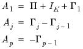
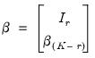
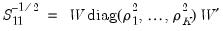
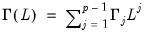
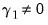
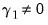

|
|
|
is a
-vector of endogenous variables, are
matrices of coefficients, and the residual vector is distributed with mean 0 and variance matrix
. Note that for simplicity, we assume that there are no deterministic terms in the VAR. This restriction is relaxed in the discussion of “VECMs with Deterministics”.
is
, the VAR process is unstable since we may show that
, and Equation (45.2) is satisfied for roots lying on the unit circle.
In general,plays a key role in identifying both the number and nature of any cointegrating relationships. To better understand this role, we subtract
from both sides of the VAR representation Equation (45.1) and rearrange terms to obtain the VECM representation:

 is
, it follows that , and the are
for all . There are two important implications of these conditions. First, since
, it follows that has reduced rank (). Second, since the
are all
, to balance the order of both sides of Equation (45.4), must also be
.
 , balancing both sides of Equation (45.6) requires . In this case we say that there are no cointegrating relations since no linear combinations of
are
.
While there are several methods for estimation of VECMs, we focus on the maximum likelihood (ML) variant, also known as reduced rank regression (RRR) (see Johansen (1995) and Lütkepohl (2005) for a detailed exposition).Formally, RRR assumes a known cointegration rank, Gaussian innovation vectors
, a time dimension of length
, and is best described using the VECM matrix representation (Equation (45.4)):

follow a basic VAR(
) as in Equation (45.1), and to work with the augmented process,
may either be viewed as an intercept inside the cointegrating relation, , or simply as an overall intercept
in the VECM. Importantly, in the latter case, the overall
is said to be restricted since it must satisfy the restriction imposed by the cointegrating relationship.
may be included as a term in the cointegrating relation, along with the term appearing in the short-run dynamics, or as an overall intercept and trend in VECM (). Notably, while the overall trend coefficient
is restricted by the cointegrating relationship, the constant
is unrestricted as it contains free parameters unrelated to
from the short-run dynamics.
Lütkepohl (2005) emphasizes the importance of the cointegrating restrictions in governing the dynamic behavior of the levels of , noting that their removal induces additional deterministics in the integrated VAR representation of the VECM. For example, if the restriction on in Equation (45.29) is removed, the corresponding integrated VAR specification will have a deterministic trend in the mean. Similarly, removing the restriction on in Equation (45.30) will generate a quadratic trend in the VAR.We can make the separation between restricted and unrestricted deterministics concrete by re-parameterizing Equation (45.28) to provide a general framework for a VECM with deterministics:
are stationary around their expected values. Taking expectations of Equation (45.32) yields:

and . In other words, and the VECM in Equation (45.32) may be written as:

and coefficients
.
denote a set of exogenous variables, and for generality, suppose we wish to include an order q distributed lag of
in the VECM.
Starting with the classical convention for deterministics in Equation (45.27), we specify a VAR(p) process where the endogenous variables are autoregressive of order p and whose difference specification includes exogenous variables that are distributed lag variables of order q. Then the exogenous component is assumed to be:
in (18) into the spaces spanned by
and
as in “The Johansen, Hendry, and Juselius Approach”. This decomposition would produce a model in which exogenous regressors appear both among the long-run and short-run regressors.
While we see that exogenous regressors are conceptually analogous to deterministic regressors, caution must be exercised when augmenting VEC models with deterministic regressors. Notably, since the deterministic regressors enter into the differenced VEC models (Equation (45.27) and Equation (45.27)), their inclusion will have implications for the behavior of the equivalent VAR level form that should be considered. These nuances are analogous to role of deterministics in the unit root literature where, for instance, a constant term in a random walk will generate a linear trend in the mean. While these considerations are also present for the deterministic trend regressors, the implications for trend regressors are more obvious as the inclusion of the trends is generally described in terms of the effects on both the levels and the differences.
 is said to be integrated of order
is said to be integrated of order  , , if is stationary, or
, , if is stationary, or  , while is non-stationary.
, while is non-stationary.  time series is said to be integrated of order
time series is said to be integrated of order  , , if at least one of its constituent series is
, , if at least one of its constituent series is  , and no series is for . Note that this definition does not preclude a subset of the system series from being of lower order (or even stationary).
, and no series is for . Note that this definition does not preclude a subset of the system series from being of lower order (or even stationary). system is said to be cointegrated if a linear combination of the constituent series is integrated of (lower) order,
system is said to be cointegrated if a linear combination of the constituent series is integrated of (lower) order,  where . Further, a system
where . Further, a system  that is integrated of order
that is integrated of order  is said to be cointegrated of order
is said to be cointegrated of order  if there exists a cointegrating
if there exists a cointegrating  -vector such that . Notice that
-vector such that . Notice that  is not unique since multiplication by any nonzero constant yields a different cointegrating vector.
is not unique since multiplication by any nonzero constant yields a different cointegrating vector. to 1 and
to 1 and  to 0 so that and .
to 0 so that and . , or non-stationary, but there may exist cointegrated processes (linear combinations) which are
, or non-stationary, but there may exist cointegrated processes (linear combinations) which are  , or stationary. In this case, the cointegrated process is mean-reverting so that it while it may deviate from its expected value in the short-run, it eventually settles at its long-run (asymptotic) expected value.
, or stationary. In this case, the cointegrated process is mean-reverting so that it while it may deviate from its expected value in the short-run, it eventually settles at its long-run (asymptotic) expected value. , the traditional levels-form VAR process is not the most useful representation since both the number and explicit form of any cointegrating relations are not easily obtained from this specification. Consequently, when analyzing cointegrating relationships we typically work with the VECM representation of the process.
, the traditional levels-form VAR process is not the most useful representation since both the number and explicit form of any cointegrating relations are not easily obtained from this specification. Consequently, when analyzing cointegrating relationships we typically work with the VECM representation of the process. :
: .
. from
from  in cointegration analysis, we focus on
in cointegration analysis, we focus on  , the matrix rank of
, the matrix rank of  , where .
, where .  matrices
matrices  and
and  each of rank
each of rank  , such that
, such that  must be an
must be an  linear combination of the series in the system, with
linear combination of the series in the system, with  representing the cointegrating rank, and
representing the cointegrating rank, and  the
the  cointegrating matrix.
cointegrating matrix.  is typically referred to as the loading matrix.
is typically referred to as the loading matrix. is not unique, a suitable normalization is possible by rearranging the variables so that the first
is not unique, a suitable normalization is possible by rearranging the variables so that the first  rows of the matrix are linearly independent:
rows of the matrix are linearly independent: eigenvalues associated with eigenvector matrix , and
eigenvalues associated with eigenvector matrix , and that are the eigenvalues of the symmetric matrix
that are the eigenvalues of the symmetric matrix . Further, may be obtained by first diagonalizing
. Further, may be obtained by first diagonalizing  using the solution to the auxiliary eigenvalue problem
using the solution to the auxiliary eigenvalue problem denotes any
denotes any  -dimensional deterministic function of time, often a low-order polynomial in
-dimensional deterministic function of time, often a low-order polynomial in  .
.  is a constant function,
is a constant function,  , then for all
, then for all  , and we have
, and we have is a linear trend,
is a linear trend,  , then for all
, then for all  , we have
, we have and
and  are vector-valued functions denoting unrestricted and restricted deterministics, respectively, with corresponding coefficients
are vector-valued functions denoting unrestricted and restricted deterministics, respectively, with corresponding coefficients  and
and  .
.  and
and  are assumed to be exclusive so that any deterministic function in
are assumed to be exclusive so that any deterministic function in  is not included in , and vice versa. For the constant function
is not included in , and vice versa. For the constant function  above, is empty and
above, is empty and  . For the linear trend function
. For the linear trend function  ,
,  , and
, and  .
. is the lag operator.
is the lag operator. and
and  may be thought of as decompositions of
may be thought of as decompositions of  into components in the orthogonal directions of
into components in the orthogonal directions of  and . Since
and . Since  is the weighting matrix for the expected congregating relation ,
is the weighting matrix for the expected congregating relation ,  are orthogonal weights for the expected common trends (transitory variables).
are orthogonal weights for the expected common trends (transitory variables). into the space spanned by the transitory variables
into the space spanned by the transitory variables  , and the space spanned by the cointegrating relations
, and the space spanned by the cointegrating relations  .
.  can itself be decomposed into the spaces spanned by
can itself be decomposed into the spaces spanned by  and . As discussed in Johansen (1995) and Juselius (2006), this result follows from a family of identities similar to
and . As discussed in Johansen (1995) and Juselius (2006), this result follows from a family of identities similar to and
and  ,
,  and
and  are the unrestricted and restricted deterministic components and coefficients, respectively.
are the unrestricted and restricted deterministic components and coefficients, respectively. ), those present only outside the equation (
), those present only outside the equation ( and
and  ), and those that are both inside and outside the cointegrating relation (
), and those that are both inside and outside the cointegrating relation ( , , and ) so that we have and , with coefficients , and .
, , and ) so that we have and , with coefficients , and . ,
,  and
and  are estimated using the classical approach outlined in
are estimated using the classical approach outlined in  and coefficients .
and coefficients . and
and  from Step 1,
from Step 1,  is estimated by choosing values of the coefficients so that the cointegrating equation has conditional mean zero:
is estimated by choosing values of the coefficients so that the cointegrating equation has conditional mean zero: and
and  , along with , , and for .
, along with , , and for . .
. using standard regression,
using standard regression, from Step 1,
from Step 1,  and from Step 2, and from Step 3.
and from Step 2, and from Step 3. and
and  in the classical approach, and
in the classical approach, and  and
and  for JHJ.
for JHJ. and
and  .
.  is imposed.
is imposed. ,
,  and ,  in the classical approach; and for under JHJ.
and ,  in the classical approach; and for under JHJ. and in the JHJ framework.
and in the JHJ framework.  and in the classical approach; ,
and in the classical approach; ,  and under JHJ.
and under JHJ. ,
,  and
and  , .
, .  in our VEC model are the variables whose dynamics and evolution are determined within the VEC system. Given the autoregressive nature of the model, these variables are necessarily correlated with the errors
in our VEC model are the variables whose dynamics and evolution are determined within the VEC system. Given the autoregressive nature of the model, these variables are necessarily correlated with the errors  .
. which are independent of the error process
which are independent of the error process  , and included in the VEC specification and estimated alongside their endogenous counterparts. Notice by this definition, deterministic regressors are examples of exogenous variables in VEC models.
, and included in the VEC specification and estimated alongside their endogenous counterparts. Notice by this definition, deterministic regressors are examples of exogenous variables in VEC models.  are cointegrated among themselves, but not with the set of exogenous variables
are cointegrated among themselves, but not with the set of exogenous variables  In this case, the VEC representation is given by:
In this case, the VEC representation is given by: . Here the VEC representation is:
. Here the VEC representation is: